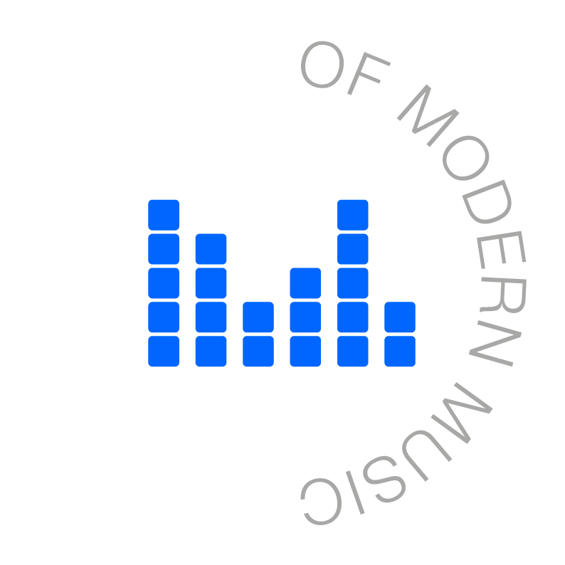

Ear Training — Accords à 4 sons
Tétrades, renversements et voicings

Type de jeu
Entraînement
Test (10 questions)
Mode d’écoute
Séparé
Simultané
Voicing
Close
Drop 2
Close + Drop 2
Familles d'accords incluses
Maj7
Min7
7sus4
7 (dominante)
Min7♭5
Tout sélectionner
Tout désélectionner
⚠️ Sélectionnez au moins une famille.
Commencer
Question 0/10
Score : 0
Temps: 0.0s
Close
Drop 2
Valider
Réécouter (note + accord)
Réécouter (accord seul)
Question suivante
Recommencer le test
Menu